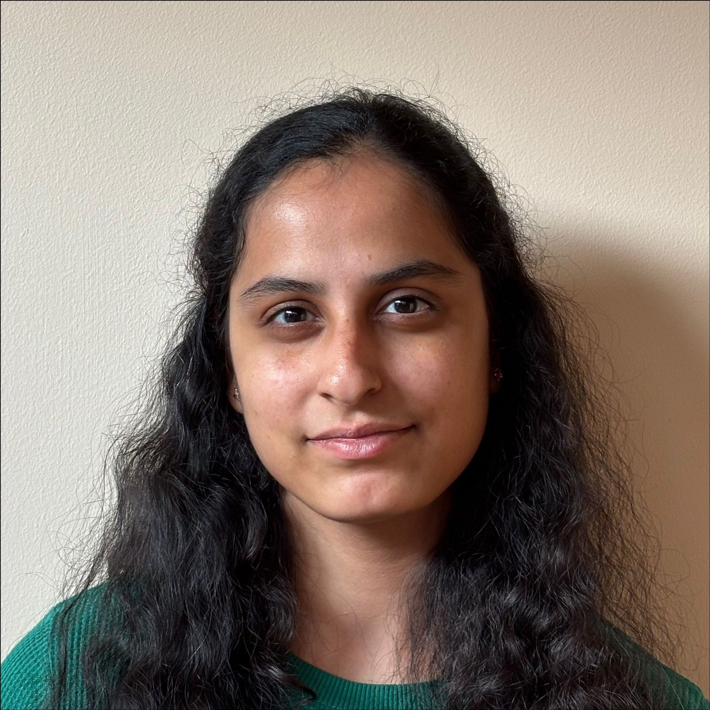
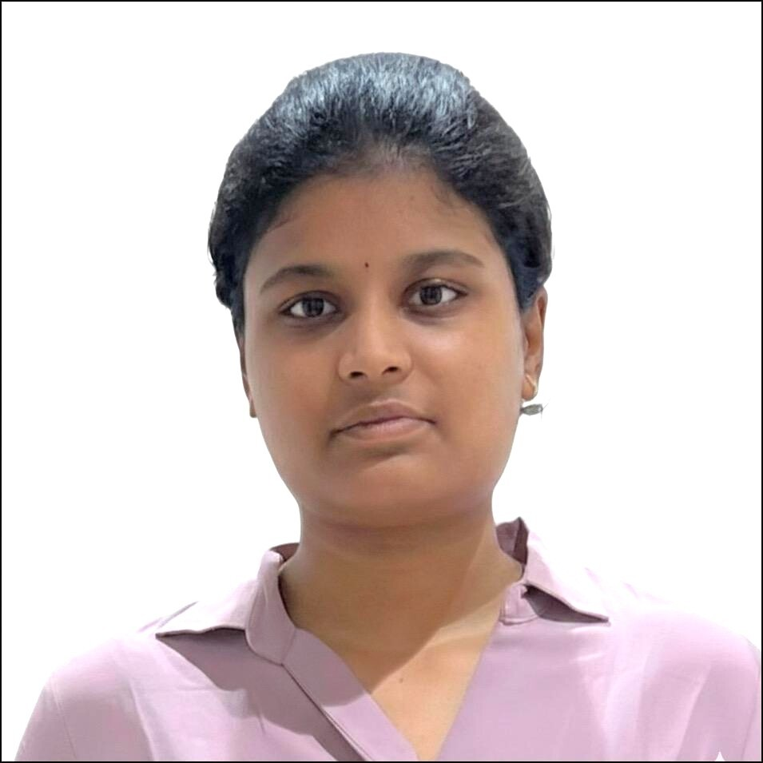

About Me
I am a Computer Science graduate student at George Mason University. My interests include web development, cybersecurity, cloud computing, and building scalable software solutions.
Graduate Students | Computer Science | George Mason University

GMU ID: G01575681 | jkeetha@gmu.edu
I am a Computer Science graduate student at George Mason University. My interests include web development, cybersecurity, cloud computing, and building scalable software solutions.
MS in Computer Science — George Mason University
B.Tech in Computer Science — CVR College of Engineering (CGPA: 8.71/10)
FraudCure - Healthcare Fraud Detection
Developed a machine learning-based fraud detection system using Python.
Catch Me If U Can!
Built a Python-based intrusion detection system using Flask and SQLite.

GMU ID: G01576792 | bhuvitha.tummala@gmail.com
I am a motivated computer science engineer with a strong foundation in Artificial Intelligence (AI) and Machine Learning (ML), currently pursuing my Master's at GMU with a 4.0 GPA.
MS in Computer Science — George Mason University (GPA: 4.0)
B.Tech in CSE (AI & ML) — SRM University, AP (CGPA: 8.2)
Web Development Intern — APSPDC
Focused on backend Django development and database administration.
Edge Computing for Smart Agriculture
Developed an interdisciplinary solution to enhance agricultural efficiency.
Access the prospective student survey form created for SWE 645: